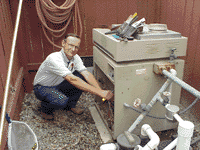

|  | Service Department | |
Serving Chino, Chino Hills, Ontario, Pomona, and Diamond Bar |
|
Malins offers many different service options. If you require In-Field Service, a trained technician can come out to solve most any problem. If you can diagnose the problem yourself, there are always professionals on hand at the Service Center located in the store. They can troubleshoot and repair your pumps, filters and automatic pool cleaners right there in the store. Scheduling a service call is as easy as calling the service center at (909) 628-0038 or filling out the Service Center Repair Form Feel free to call (909) 628-0038 or e-mail anytime with your questions. |